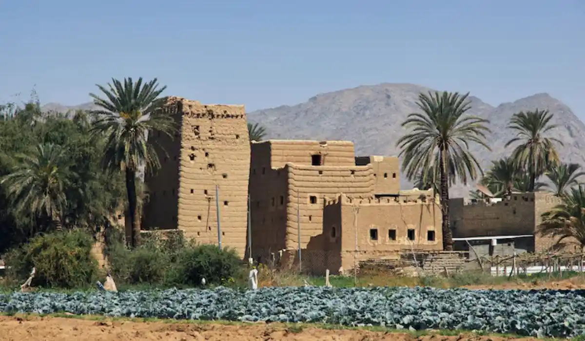

Lawyer and law firm in Najran, Saudi Arabia, for all case types. Fast legal consultation.

Our team serves every district and area of Najran without exception, with the same response speed and service standard.
Our team in Najran provides legal advice and representation to individual and corporate clients in a southern border region with a deep historical and commercial heritage, with practical experience in agricultural land and inheritance cases tied to the region's distinct character.
Najran is a region with deep historical heritage, having been a major stop on the ancient incense trade route, and is known for its agricultural character tied to its oases and date palm farms spanning generations. This historical and agricultural heritage creates a distinctive nature to cases in the region, where inheritance and inherited agricultural land cases occupy a central place among the files we handle. Najran is also known for its unique traditional mudbrick architecture, a heritage adding an extra dimension to some property cases tied to old buildings of heritage value.
Inheritance and estate matters top the list of requests in Najran, given the nature of family ownership of date palm farms and agricultural land extending across multiple generations. We also handle a number of real estate and property law cases tied to documenting old land, alongside company formation for small and medium businesses spread across the region's markets.
Given the region's traditional agricultural character, we also help with files tied to the agriculture sector, from date palm farm lease contracts to traditional irrigation rights disputes, in addition to personal status cases in the region's general courts.
Najran cases go to the General Court for personal status, inheritance, and civil matters, and the Commercial Court for commercial and real estate disputes, with comprehensive electronic tracking via the Najiz platform. For old agricultural land cases lacking modern documentation, we help clients understand the correct documentation path before any judicial action, coordinating with the relevant notary offices when new heirship deeds need to be issued.
Recurring scenarios include a large family needing to settle the inheritance of a date palm farm passed down across generations without modern documentation, a landowner needing to update an old title deed before any property transaction, or a dispute between farmers over inherited traditional irrigation rights. Another common scenario: a small business owner in one of the region's markets needing to formally incorporate to expand their operations.
An additional common scenario in Najran: a family owning an old traditional mudbrick building needing to document ownership before restoring it or converting it to tourism use — cases that require special coordination with authorities responsible for the region's architectural heritage.
In inheritance cases where heirs agree in principle, a consultation to draft a documented division agreement is enough. Where there's fundamental disagreement or a need to update complex old deeds, we may need full representation before the General Court to ensure a fair, legally compliant division. In our experience, early intervention before a minor disagreement escalates saves the family significant time and cost later.
Signs that call for immediate contact: a dispute among heirs over a date palm farm undivided for generations, an old title deed needing updates before any property transaction, or a dispute over irrigation rights affecting agricultural land productivity. Addressing these situations early protects all parties' rights.
It starts with a short WhatsApp message, followed by an assessment from a lawyer specializing in inheritance and agricultural property matters, then a clear, time-bound plan. Given how complex some older inheritance files are, the initial assessment stage may take a bit longer to gather precise data on all heirs.
In relatively simple inheritance cases, a division agreement can be reached within a few weeks. More complex cases depend on the number of heirs and how available old documents are.
For inheritance cases, it helps to gather any old documents related to the land even if they aren't modern title deeds. For company formation cases, describing the nature of the desired business is enough. We only ask for official documents once you move to actual representation. For old heritage buildings, any photos or historical documents proving the building's prior use help speed up the documentation path.
Our Najran team coordinates with our team in Jazan, given the geographic interconnection between these two southern border regions. We ensure consistent handling of your file even if the dispute or contract spans both regions.
Our Najran experience is built on a deep understanding of inheritance and agricultural land complexities inherited across generations in a region with deep historical heritage — a specialty requiring more patience and precision than ordinary real estate cases.
We understand that inheritance cases in Najran often have roots going back decades or even centuries, and that the heirs themselves may be spread across several cities. We commit to the patience needed to gather all information precisely, ensuring clear communication with all heirs to guarantee a fair division acceptable to everyone, preserving the extended family's cohesion.
A common question: can agricultural land be documented without any prior official record at all? Yes in some cases, through an alternative ownership-proof path in coordination with relevant authorities, and we help you explore this option. Another question: does dividing a date palm farm differ from dividing an ordinary residential plot? Yes, given the importance of preserving the shared irrigation system, and we often recommend solutions that keep the farm operating as one unit.
Our team in Najran covers every neighborhood and area without exception, including Al Fahd district, Al Nahdah, and the central downtown area, with the same response speed and service standard regardless of where you are in the city.
Yes, we regularly handle large inheritance cases involving date palm farms inherited across several generations, and help organize heirs' data before any legal action, however far back the file's history goes.
Yes, we help with the process of documenting and updating old title deeds in coordination with the relevant authorities, ahead of any legal property transaction, even without modern documents.
Yes, we help settle disputes related to traditional inherited irrigation rights between owners of neighboring agricultural land in Najran's oases.
Yes, one heir can start contact with us to explain the situation, with necessary formal authorizations completed later by the other heirs.
Yes, our team serves both southern regions with full coordination, and Jazan also has its own dedicated page.
Yes, it varies by the number of heirs and the complexity of the estate's land, and we explain this transparently after gathering the file's basic information.
Yes, through an alternative documentation path in coordination with heritage authorities, and we help you explore this option in detail.
Reach a licensed lawyer within minutes on WhatsApp — in any city in the Kingdom.
Start your consultation